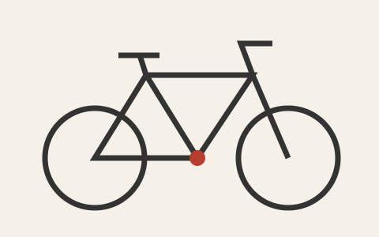

Toulouse en mouvement
Toulouse est la ville où je poursuis mes études. Pour cette dernière page, je souhaite relier mon site personnel à un service que j'utilise tout les jours et qui est utile autour du campus : la disponibilité des vélos.

Préparer un départ du campus
À terme, cette page affichera les vélos et les places disponibles dans les stations VélôToulouse proches du campus du Mirail.
Version statique : les données ne sont pas encore chargées. La récupération des disponibilités sera ajoutée à l’étape JavaScript.
Exemple de présentation
Les valeurs suivantes sont fictives et servent seulement à montrer le contenu prévu.
- Station
- Station de démonstration - campus
- Vélos disponibles
- 8 (exemple fictif)
- Places disponibles
- 12 (exemple fictif)
Le fonctionnement prévu
- Récupérer les données publiques de Toulouse Métropole.
- Retrouver les stations sélectionnées autour du campus.
- Afficher les vélos, les places libres et la date des données.
- Permettre une actualisation sans recharger la page.
Un message indiquera si les données ne sont pas accessibles ou si elles sont anciennes.